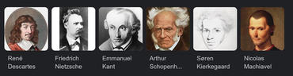

<!DOCTYPE html>
<html lang="fr">
<head>
    <meta charset="UTF-8">
    <meta http-equiv="X-UA-Compatible" content="IE=edge">
    <meta name="viewport" content="width=device-width, initial-scale=1.0">
    <title>Les meilleures citations de philosophie</title>
    <link rel="stylesheet" href="dico.css">
</head>
</html>
<div style="background-color:white"></div>  
    <input type="search" ;background color="gray">
    <button class="center">Rechercher </button>
     Citations <button type="submit"></button>
   Auteurs <button type="submit"></button>
  
</div >

<body id="body">
    <div class="container">
        <div class="centered-block">
      
<div style="background-color: rgb(255, 255, 255);"> 
    <div class="center">
        <h1>Les meilleures citations de nos grands philosophes</h1>
    </div>
    


<div class="center1">
<p>Mise à jour le mardi 30 mai 2023 à 08h10</p><br>
<ul>
    <li> La philosophie peut se définir comme l'ensemble de conceptions portant <br> sur les principes des êtres et des choses, 
    sur le rôle de l'homme dans l'univers, 
    sur Dieu, sur l'histoire et, de façon générale, <br> sur tous les grands problèmes de la métaphysique.</li> <br> <br>
    <li>
        Le philosophe est celui qui pense de façon conceptuelle, <br> radicale, critique, systématique les grands principes et <br> valeurs de la vie et de la connaissance
         : Platon, Aristote, Descartes, Pascal, Leibniz, <br> Spinoza, Hume, Kant, Schopenhauer, Kierkegaard, Machiavel, <br> Hegel, Nietzsche, Bergson, Wittgenstein, Heidegger
          représentent l'idée que se fait l'occident de la philosophie.
    </li> <br> <br>
    
       <li> Les phrases Philosophiques à connaître : Les philosophes <br> ont du style. On l’oublie ou on l’ignore, imaginant que pour être rigoureuse, <br> la pensée doit renoncer à la beauté. Au contraire,
         inventeurs de concepts,  les philosophes sont  <br> aussi des séducteurs, des manipulateurs, des provocateurs, <br> des conteurs. Ils enferment en de simples formules leurs plus <br> grandes idées.
          Simples mais pas immédiates : ce qui semble évident <br> ne l’est qu’au terme d’une longue réflexion.
        </li> 
        </ul>
        </p> <br>
        <h2>
            Les 10 plus belles citations de philosophie
        </h2>
            
            <Div class="center2"> <br>
                <ul>
    
        <p>« Connais-toi toi-même » - Thalès</p> 
    
     <p> Connais-toi toi-même est l'un des préceptes gravés sur le fronton du temple de Delphes,<br> et souvent rapporté dans les écrits de Platon, dans les mots de Socrate</p> <br>
    
    <p>2 « L'enfer, c'est les autres » - Sartre</p>
    <p>Mais « l'enfer c'est les Autres » a toujours été mal compris. On a cru que je voulais dire par là que nos rapports avec les autres étaient toujours empoisonnés, <br> que c'étaient toujours des rapports infernaux. <br> Or c'est autre chose que je veux dire. Je veux dire que si les rapports avec autrui sont tordus, viciés,<br> alors l'autre ne peut-être que l'enfer. Pourquoi ? Parce que les autres sont au fond ce qu'il y a de plus important en nous-mêmes pour notre propre <br> connaissance de nous-mêmes. - Enregistrement phonographique de Jean-Paul Sartre en 1965 en préambule à Huis clos - L'enfer c'est les autres
    </p> <br>
    <p>3.« Ôte-toi de mon soleil » - Diogène de Sinope
    </p>
    <p>
        En 336 av J.C., après quelques mois passés vers le Danube, le tout jeune roi de Macédoine se rend à Corinthe où il rencontre Diogè. <br> Cet épisode de la vie de Diogène face à Alexandre le Grand est raconté dans de nombreux textes, <br> notamment dans La Vie d'Alexandre de Plutarque, dans Les Tusculanes de Cicéron et bien sûr par Diogène Laërce, <br> le doxographe principal de Diogène, dans Les Vies des philosophes.
        
        Le fameux échange entre Alexandre et le philosophe est entré dans l'histoire. Le grand roi s'adressant à Diogène lui dit :
        
        - Demande-moi ce que tu veux, je te le donnerai.
        
        Et Diogène répondit : - Ôte-toi de mon soleil.</p> <br>
    
     <p>4.« Je pense donc je suis » - René Descartes</p>
     <p>Cogito, ergo sum est une locution latine signifiant « Je pense, donc je suis ». <br> Employée en français par le philosophe et mathématicien René Descartes dans le Discours de la méthode (1637),
        <br> la formule connaît une variante dans son œuvre en 1641, dans les Méditations métaphysiques : <br> ego sum, ego existo (« je suis, j'existe ») ; puis, il revient à celle de 1637 de nouveau en 1644,
         <br> dans les Principes de la philosophie (ego cogito, ergo sum).</p> <br>
     <p>5.« L'homme est un loup pour l'homme » - Plaute</p>
     <p>
            Phrase inventée par Plaute (en latin : « homo homini lupus ») dans sa pièce Asinaria en 212 avant J.-C.
            
            La première occurrence de cette locution est chez Plaute, dans sa comédie Asinaria (La Comédie des Ânes, vers 195 av. J.-C, <br> II v495 : "Lupus est homo homini, non homo, quom qualis sit non novit <br> " « Quand on ne le connaît pas, l'homme est un loup pour l'homme »). <br> Dans cette formule initiale, elle signifie que l'homme prend pour un loup l'homme qu'il ne connait pas. <br> Plaute vise la peur de l'inconnu et non la violence des humains.
            
            L’homme est un loup pour l’homme : On l’utilise pour parler de la cruauté gratuite que l’homme a envers ses semblables. <br> Alors que Hobbes veut dire par là que c’est l’expression d’un principe vital <br> qu’il reprend au loup et non pas d’une cruauté gratuite. C’est ce principe naturel qui justifie d’ailleurs <br> pour lui le pacte social assurant la suspension des violences justement, pour assurer la conservation des personnes et des biens.
            
            Homo homini lupus est : locution latine signifiant « l'homme est un loup pour l'homme »,<br> autrement dit : « l'homme est le pire ennemi de son semblable, ou de sa propre espèce ». <br>
            
            Dans Épître dédicatoire À monseigneur le comte de Devonshire Thomas Hobbes reprend la formule : « Et certainement il est également vrai,<br> et qu'un homme est un dieu à un autre homme, et qu'un homme est aussi un loup à un autre homme. »</p>
       <br> <br>
     </p>
</p>
<div class="centre">
    <a href="#https://web.whatsapp.com/"></a>
    <button>Contactez-nous</button>
</Div>
    </div>   
  </div>
<!-- <div style="text-align: right;">
        
    </div> -->
    <br>

    

    
    </div>
    </body><br> <br>
        <div class="footer ">
        <footer class="footer">
            <p>© 2001- 2023 Frédéric Jézégou - & Dicocitations SAS</p>
            <p>>Mentions Légales- Politique de confidentialité- Cookies </p>
            <p>La base de données des citations est la propriété exclusive de Frédéric Jézégou producteur du contenu</p> <br>
            <p>Si l'on connaît de nombreuses citations,il est souvent plus difficile  de savoir à quel moment elles ont été dites ou même  de citer leur auteur... <br></p>
              <p> Plan des articles -</p> 
              
             </footer>

</html>